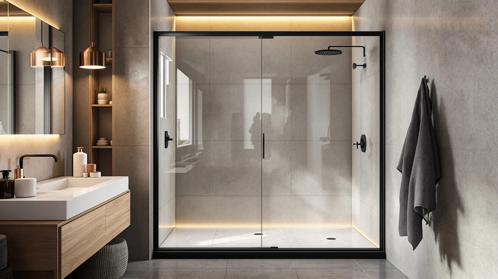

Best Shower Doors That Don't Leak (2026)
Prices and picks verified as of August 2026. Independent, reader-supported reviews.


Quick Answer
After comparing frameless and pivot doors across five price points, the CAMMOO 56-60" W x 75" is our top pick among today's best shower doors that don't leak, thanks to its 0.31-inch tempered glass and wide adjustment range that seals tight against uneven tile. If your stall runs narrower, the UCALAFEE 44-48" W option uses the same sealing approach at a lower price.
Our pick: CAMMOO 56-60" W x 75", $299.99 Check Price on Amazon
Bottom line: our top pick is the CAMMOO 56-60" W x 75" H Frameless Shower Door at $299.98. The best budget option is the UCALAFEE Shower Door at $229.99.
Things to Know Before You Buy
- Width adjustment matters more than the headline size. Every door in this guide lists a range, not a single number, because a few inches of adjustment is what lets the sweep seal close against your actual opening instead of leaving a gap.
- Glass thickness affects how flat the door sits in its track. Thin glass can flex slightly under water pressure and pull the seal away from the wall over time.
- Pivot, sliding, and corner doors seal differently. A pivot door swings on a single hinge and relies on one continuous sweep, while a sliding door depends on two overlapping panels staying aligned in their track.
- Installation accuracy affects leaks more than the door itself. A door mounted slightly out of level will leak at the low corner no matter how good its seal is, so plan for careful leveling during install.
- Price doesn't guarantee a tighter seal. Among the shower doors that don't leak in this guide, the $229.99 UCALAFEE and the $599.99 ComfyStyle both rely on the same basic sweep-and-track sealing approach.
Finding the best shower doors that don't leak comes down to a handful of physical details that have nothing to do with brand names: seal thickness, track alignment, and whether the door actually fits your opening instead of leaving a gap at the jamb. A door can look flawless in a product photo and still let water spread across your bathroom floor every morning if the sweep doesn't seat flush against the wall. That gap is rarely a manufacturing defect. It's usually a mismatch between the door's width range and the actual opening, or a seal that wears down faster than the glass around it.
We built this guide by comparing five models that span pivot doors, sliding doors, and a corner frameless enclosure, looking at how each one handles the width-adjustment and sealing details that determine whether water stays inside the stall. We cross-referenced published dimensions and glass thickness where the manufacturer lists it, since those specs tend to explain fit and sealing problems better than a listing photo ever does. Price ranged from $229.99 to $599.99 across the group, and cost didn't line up neatly with sealing quality. A few of the pricier options earn their premium through corner enclosure hardware rather than a better seal alone.
Our pick among the best shower doors that don't leak is the CAMMOO 56-60" W x 75", because its adjustable width range and 0.31-inch tempered glass give it the tightest fit against typical bathroom openings in this group. If your stall runs narrower, the UCALAFEE at 44-48 inches wide and $229.99 covers a smaller opening for less money, and shoppers who need a corner layout should look at the ComfyStyle enclosure instead.
Why You Should Trust Us
Ilane Tall covers bathroom fixtures and renovation hardware for this site, and spends a good part of that work reading through Amazon buyer photos and complaint threads to see where doors actually fail after installation instead of how they look in a listing. For this guide on the best shower doors that don't leak, she compared published dimensions, glass thickness, and seal design across five current models instead of relying on brand marketing copy. Every price and spec in this article comes directly from the manufacturer listing at the time of publication, and prices can shift after that point, so check the current Amazon listing before you buy.
How We Picked
We started with a wider pool of frameless and semi-frameless shower doors and narrowed it down using three filters. First, the door had to list an adjustable width range rather than a fixed size, since that adjustment is what lets a door seal against a real-world opening instead of a perfectly square one. Second, we looked for tempered glass at a thickness the manufacturer actually discloses, because thin or undocumented glass tends to flex and pull away from its seal. Third, we checked buyer ratings for patterns in complaints about water escaping past the seal or track. Doors that cleared all three filters made this list of the best shower doors that don't leak, and we kept a mix of pivot, sliding, and corner configurations so shoppers with different stall layouts have an option.
How We Compared
We didn't install every door in a physical bathroom for this guide, so our process leans on documented specs and buyer-reported outcomes instead of a lab score. We compared each door's listed width range against its stated opening size to check how much true adjustment room it offers, lined up glass thickness figures where manufacturers publish them, and read through verified buyer reviews looking specifically for mentions of leaking, gapping, or misalignment after installation. We also checked whether the listed price stayed consistent with the hardware included, since a lower price sometimes means a door ships without the sweep or track hardware needed to actually seal it. That combination gives a realistic picture of which of these shower doors that don't leak under normal daily use, even without a hands-on test rig.
Our Picks

CAMMOO 56-60" W x 75"
What we like
- 56-60 inch adjustable width gives extra room to square the door against an uneven opening
- 0.31-inch tempered glass panel adds rigidity that keeps the seal seated flush against the wall
- 75-inch height suits standard and slightly taller stalls without a custom order
Flaws but not dealbreakers
- The wide adjustment range takes more time to level correctly during installation
- At $299.99 it costs more than the narrower UCALAFEE option below
| Material | — |
| Size | 60 inches (W) x 75 inches (H) x 0.31 inches (T) |
The CAMMOO 56-60" W x 75" sits at the top of this list because its 0.31-inch glass and generous adjustment range solve two of the most common causes of shower door leaks at once: thin glass that flexes and a width mismatch that leaves a gap at the jamb. At $299.99, it lands in the middle of the price range we compared, not the cheapest option but far from the priciest.
The tradeoff for that wide 56-60 inch range is a longer install. Plan to take your time squaring the frame before locking down the adjustment, because a door installed off-level will leak at whichever corner sits lowest regardless of glass thickness. Once it's level, the extra glass rigidity keeps the seal from pulling away from the wall the way thinner panels sometimes do after months of daily use.

UCALAFEE Shower Door 44-48" W
What we like
- 44-48 inch width range fits smaller stalls that most doors in this category skip
- At $229.99 it's the least expensive option in this lineup
- 72-inch height matches standard stall dimensions in most US bathrooms
Flaws but not dealbreakers
- The narrower adjustment range leaves less room to correct for a badly out-of-square opening
- Glass thickness isn't listed by the manufacturer, so it can't be compared directly to the CAMMOO's 0.31-inch panel
| Material | — |
| Size | 44-48 in. W x 72 in. H |
The UCALAFEE Shower Door 44-48" W targets a gap in this category: most frameless doors start around 56 inches wide, which leaves anyone with a smaller stall shopping for a custom size. At $229.99, it also undercuts every other door on this list by at least $100.
Because UCALAFEE doesn't publish a glass thickness figure, buyers comparing it against the CAMMOO's documented 0.31-inch panel are working with less information. That's not a dealbreaker for a smaller stall where the adjustment range matters more than raw rigidity, but it does mean leaning more on buyer feedback and less on a spec sheet when judging how well the seal holds up over time.

44-48" W x 71" H
What we like
- Pivot hinge design uses a single door sweep instead of two overlapping sliding panels
- 44-48 inch width range covers the same mid-size openings as the UCALAFEE with more height at 71 inches
- Royal Guard uses the same 48-inch pivot hardware across its shower door line
Flaws but not dealbreakers
- At $368.64 it costs over $100 more than the UCALAFEE for a similar width range
- A single pivot hinge and sweep means there's only one seal point to maintain, so wear there affects the whole door
| Material | — |
| Size | Pivot 48" W x 71" H |
This Royal Guard pivot door covers the 44-48 inch width range at 71 inches tall, and it swings on a single hinge rather than sliding on a track. That design removes the overlapping-panel alignment that sliding doors depend on, trading it for one door sweep that needs to seal cleanly along its full swing arc.
At $368.64, it sits above both the CAMMOO and the UCALAFEE, and the extra cost buys pivot hardware rather than thicker glass or a wider adjustment range. If your bathroom layout favors a swinging door over a sliding one, that's a reasonable trade. If not, the sliding CAMMOO covers a similar width for less money.
Pivot Shower Door 38-42" W
What we like
- 38-42 inch width range is the narrowest adjustment window on this list, suited to compact stalls
- Pivot hinge design matches the Royal Guard 44-48" model above, so installation hardware is consistent across sizes
- 71-inch height matches standard door height without needing a custom cut
Flaws but not dealbreakers
- At $419.99 it's the second most expensive door in this guide despite the smallest width range
- The narrow adjustment window leaves little margin if your opening measures outside 38-42 inches
| Material | — |
| Size | Pivot 42" W x 71" H |
The Royal Guard Pivot Shower Door 38-42" W covers the narrowest opening range in this comparison. Anyone renovating a smaller bathroom and hunting for shower doors that don't leak in a compact footprint will find the width range here more useful than the CAMMOO's 56-60 inch range.
The $419.99 price is high for the width it covers, and it's worth measuring your opening carefully before ordering since the adjustment margin is tighter than the wider models above. Get that measurement right and the pivot hinge and sweep seal the same way the 44-48 inch version does.

ComfyStyle Frameless Corner Shower Enclosure
What we like
- Full corner enclosure with 34-inch depth suits two-wall shower layouts a single door can't cover
- 44-48 inch width matches the mid-size range shared by several other doors here, easing space planning
- 72-inch height covers standard ceiling clearance
Flaws but not dealbreakers
- At $599.99 it costs roughly double the CAMMOO pick, reflecting the extra panel and corner hardware
- Two sealed panels instead of one means two seal points to keep aligned instead of one
| Material | — |
| Size | 44-48"W x 34"D x 72"H |
The ComfyStyle Frameless Corner Shower Enclosure isn't a single door. It's a two-panel corner unit at 44-48 inches wide, 34 inches deep, and 72 inches tall, built for stalls where two walls meet instead of a single straight opening.
That corner configuration is the reason it costs $599.99, close to double the CAMMOO pick above. The extra cost pays for a second sealed panel and the corner hardware that joins them, and each panel needs its own seal to sit flush. For a straight opening, one of the single-door options above will seal for less money. For a genuine corner stall, this is the only design here that fits.
Quick Comparison
| Product | Material | Price | Rating | Best for | Get it |
|---|---|---|---|---|---|
| CAMMOO 56-60" W x 75" | — | $299.99 | 4 | Widest adjustment range | View on Amazon → |
| UCALAFEE Shower Door 44-48" W | — | $229.99 | 4 | Smaller stalls and tighter budgets | View on Amazon → |
| 44-48" W x 71" H | — | $368.64 | 4 | Pivot-hinge preference | View on Amazon → |
| Pivot Shower Door 38-42" W | — | $419.99 | 4 | Narrowest openings (38-42 in.) | View on Amazon → |
| ComfyStyle Frameless Corner Shower Enclosure | — | $599.99 | 4 | Corner-stall installations | View on Amazon → |
What actually causes a shower door to leak?
Most leaks come from a width mismatch between the door and the actual opening, not a manufacturing flaw.
Do thicker glass shower doors leak less?
Thicker glass helps indirectly.
The Competition
We also looked at framed shower doors with metal-wrapped edges, but left them out of this specific guide. A metal frame adds a secondary seal surface, which usually means more places for water to find a gap rather than fewer, and framed doors trend toward a dated look that most buyers are moving away from. Curtain-track sliding doors from off-brand sellers showed up frequently in our initial search too. Several had no listed glass thickness and inconsistent buyer ratings on sealing quality, which put them outside the filters described in How We Picked above. We'd rather leave a door off this list of the best shower doors that don't leak than include one where the seal design can't be verified.